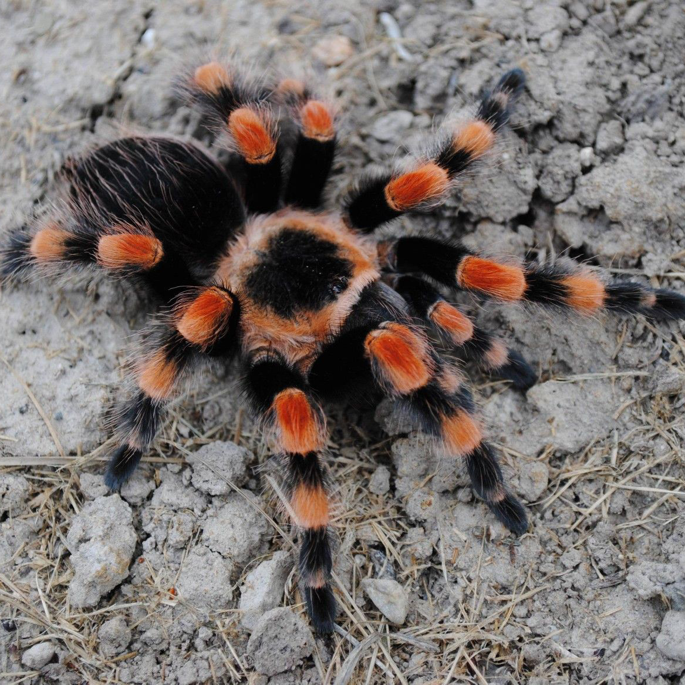
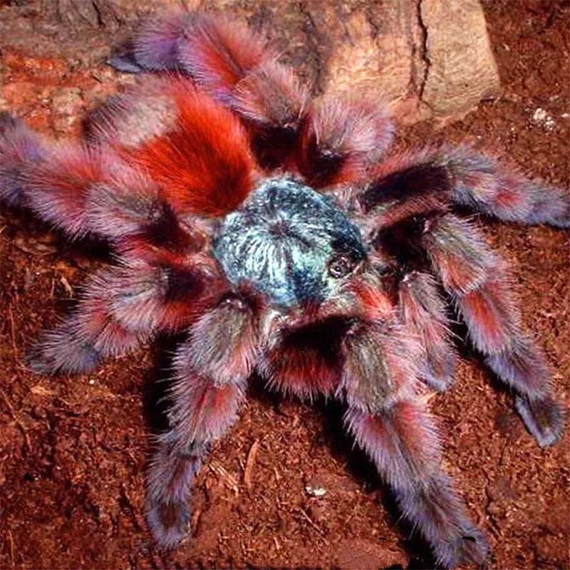

New World Tarantulas
New world tarantulas are native to North, Central, and South America.
Key Traits
- Generally more docile, especially species from the U.S. and South America.
- Possess urticating hairs, a major defensive advantage.
- Tend to rely on passive or non-aggressive defense.
Urticating Hairs
New World tarantulas have tiny barbed hairs on their abdomens that they can: kick off with their back legs, and use to irritate predators’ skin, eyes, or mucous membranes,
These hairs vary in types (I–VII), with some causing mild itching and others causing more severe irritation.
Behavior
- Slower-moving overall
- More likely to flick hairs or retreat when threatened
- Often calm enough to be kept as beginner tarantulas
Examples of New World Species

Grammostola pulchra
Brazilian Black

Brachypelma hamorii
Mexican Red Knee

Aphonopelma chalcodes
Arizona Blonde

Caribena versicolor
Antilles Pinktoe

Theraphosa blondi
Goliath Birdeater